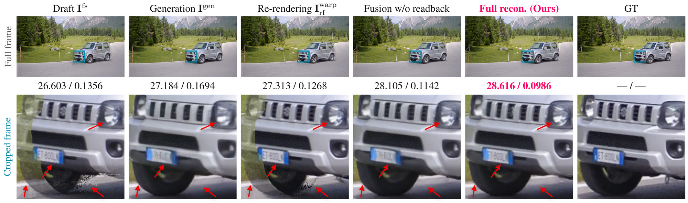
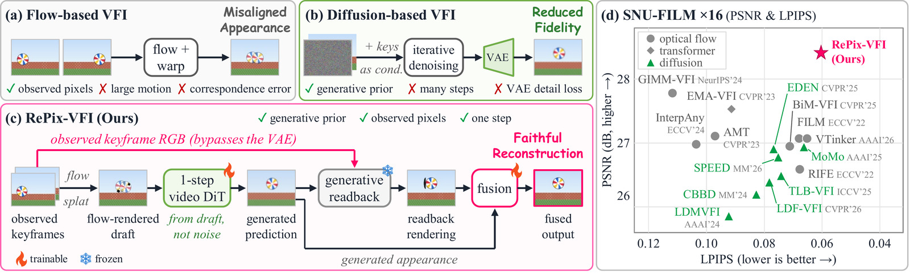
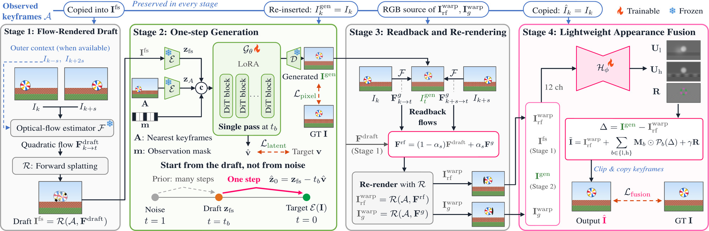

Faithful frames from one-step diffusion
Each video interpolates a window from keyframes 16 or 8 frames apart and plays it three times: in real time, then 3× and 6× slower. Every column shows the full frame above and a fixed enlarged crop below.
14 videos: the examples of Figs. 3, 5, 6 and 7 and one more DAVIS sequence (camel). Method names, frame numbers and the playback speed are part of each video.
Generation, re-rendering and fusion
One-step generation completes the motion; re-rendering brings back the observed pixels; fusion keeps the best of both. Each stage of the reconstruction on DAVIS car-turn, next to the ground truth.
DAVIS · car-turn · ×8, the sequence of Fig. 4. Top: left and right observations, flow draft, generation; bottom: re-rendering, fusion without readback, full reconstruction, GT.


Reconstruction ablations Table 3 · SNU-FILM
| Output | ×4 | ×8 | ×16 | |||
|---|---|---|---|---|---|---|
| PSNR↑ | LPIPS↓ | PSNR↑ | LPIPS↓ | PSNR↑ | LPIPS↓ | |
| Draft Ifs | 35.15 | 0.0374 | 31.33 | 0.0598 | 27.12 | 0.0966 |
| Generation Igen (ℒlatent) | 33.24 | 0.0378 | 30.35 | 0.0599 | 26.59 | 0.0965 |
| Generation Igen (+ℒpixel) | 34.83 | 0.0286 | 32.19 | 0.0402 | 28.03 | 0.0676 |
| Ifs-reference rendering | 35.07 | 0.0358 | 31.21 | 0.0538 | 26.89 | 0.0888 |
| Re-rendering Iwarprf | 35.52 | 0.0349 | 31.93 | 0.0519 | 27.46 | 0.0857 |
| Fusion w/o readback | 36.84 | 0.0228 | 33.04 | 0.0359 | 28.22 | 0.0646 |
| Full reconstruction (Ours) | 36.98 | 0.0198 | 33.31 | 0.0322 | 28.42 | 0.0604 |
Appearance fusion design Tables 4 and 10 · LAVIB, SNU-FILM, Adobe240
| Variant | ×4 | ×8 | ×16 | |||
|---|---|---|---|---|---|---|
| PSNR↑ | LPIPS↓ | PSNR↑ | LPIPS↓ | PSNR↑ | LPIPS↓ | |
| Spatial mixing, no residual | 35.85 | 0.0267 | 32.80 | 0.0393 | 27.92 | 0.0695 |
| Fixed mixing maps + residual | 35.83 | 0.0262 | 32.77 | 0.0405 | 27.90 | 0.0752 |
| Free residual fusion | 35.86 | 0.0253 | 32.70 | 0.0401 | 27.82 | 0.0768 |
| Full reconstruction (Ours) | 35.98 | 0.0240 | 32.85 | 0.0369 | 27.93 | 0.0676 |
| Variant | ×4 | ×8 | ×16 | |||
|---|---|---|---|---|---|---|
| PSNR↑ | LPIPS↓ | PSNR↑ | LPIPS↓ | PSNR↑ | LPIPS↓ | |
| (a) SNU-FILM | ||||||
| Spatial mixing, no residual | 36.81 | 0.0249 | 33.27 | 0.0368 | 28.44 | 0.0642 |
| Fixed mixing maps + residual | 36.67 | 0.0220 | 33.16 | 0.0349 | 28.37 | 0.0639 |
| Free residual fusion | 36.75 | 0.0211 | 33.11 | 0.0340 | 28.31 | 0.0636 |
| Full reconstruction (Ours) | 36.95 | 0.0203 | 33.30 | 0.0325 | 28.42 | 0.0607 |
| (b) Adobe240 | ||||||
| Spatial mixing, no residual | 35.21 | 0.0280 | 33.13 | 0.0339 | 27.46 | 0.0585 |
| Fixed mixing maps + residual | 35.31 | 0.0235 | 33.16 | 0.0301 | 27.43 | 0.0558 |
| Free residual fusion | 35.36 | 0.0230 | 33.18 | 0.0294 | 27.41 | 0.0550 |
| Full reconstruction (Ours) | 35.39 | 0.0230 | 33.22 | 0.0292 | 27.44 | 0.0544 |
Linear versus flow-rendered draft Table 7 · LAVIB
| Output | Metric | ×2 | ×4 | ×8 | ×16 |
|---|---|---|---|---|---|
| Linear source (input) | PSNR↑ | 28.19 | 25.12 | 22.64 | 20.45 |
| LPIPS↓ | 0.1058 | 0.1161 | 0.1550 | 0.2192 | |
| Generated from linear source | PSNR↑ | 30.31 | 28.45 | 27.82 | 24.79 |
| LPIPS↓ | 0.0674 | 0.0769 | 0.0871 | 0.1255 | |
| Flow-rendered draft Ifs (input) | PSNR↑ | 37.61 | 35.31 | 32.11 | 26.68 |
| LPIPS↓ | 0.0262 | 0.0350 | 0.0554 | 0.1116 | |
| Generated from Ifs | PSNR↑ | 35.60 | 33.95 | 31.35 | 26.36 |
| LPIPS↓ | 0.0258 | 0.0351 | 0.0561 | 0.1122 | |
| Generated-output difference | ΔPSNR | +5.29 | +5.50 | +3.53 | +1.57 |
| ΔLPIPS | -0.0416 | -0.0418 | -0.0310 | -0.0133 |
Paper figures
The qualitative comparisons of the paper at ×16 and ×8 on SNU-FILM, DAVIS, Adobe240 and REDS, and seven target times between two keyframes.


Quantitative results
On SNU-FILM at ×8 and ×16, the highest PSNR and the lowest LPIPS, FloLPIPS and tOF among the compared methods: +1.71 and +1.48 dB PSNR over the best diffusion-based baseline, and 32–42× faster than the state-of-the-art multi-frame VFI diffusion model.
| Method | Venue | NFE | SNU-FILM ×4 | SNU-FILM ×8 | SNU-FILM ×16 | ||||||||||||
|---|---|---|---|---|---|---|---|---|---|---|---|---|---|---|---|---|---|
| PSNR↑ | SSIM↑ | LPIPS↓ | FloLPIPS↓ | tOF↓ | PSNR↑ | SSIM↑ | LPIPS↓ | FloLPIPS↓ | tOF↓ | PSNR↑ | SSIM↑ | LPIPS↓ | FloLPIPS↓ | tOF↓ | |||
| Non-diffusion | |||||||||||||||||
| FILM | ECCV'22 | 1 | 36.62 | 0.9815 | 0.0186 | 0.0300 | 0.2856 | 31.91 | 0.9501 | 0.0344 | 0.0565 | 0.4129 | 27.07 | 0.8879 | 0.0680 | 0.1094 | 0.6814 |
| RIFE | ECCV'22 | 1 | 35.72 | 0.9790 | 0.0211 | 0.0340 | 0.3248 | 31.19 | 0.9479 | 0.0364 | 0.0618 | 0.4601 | 26.59 | 0.8854 | 0.0678 | 0.1114 | 0.7617 |
| AMT | CVPR'23 | 1 | 36.73 | 0.9823 | 0.0291 | 0.0470 | 0.3766 | 32.04 | 0.9525 | 0.0495 | 0.0855 | 0.5086 | 27.11 | 0.8926 | 0.0971 | 0.1659 | 0.7852 |
| EMA-VFI | CVPR'23 | 1 | 36.63 | 0.9827 | 0.0296 | 0.0492 | 0.2924 | 32.27 | 0.9543 | 0.0496 | 0.0840 | 0.4073 | 27.53 | 0.8962 | 0.0914 | 0.1537 | 0.6055 |
| GIMM-VFI | NeurIPS'24 | 1 | 36.88 | 0.9828 | 0.0336 | 0.0527 | 0.2811 | 32.45 | 0.9554 | 0.0607 | 0.0970 | 0.3947 | 27.78 | 0.9016 | 0.1118 | 0.1762 | 0.5674 |
| InterpAny | ECCV'24 | 2 | 36.24 | 0.9809 | 0.0278 | 0.0477 | 0.3246 | 31.60 | 0.9496 | 0.0510 | 0.0926 | 0.4807 | 26.98 | 0.8898 | 0.1036 | 0.1717 | 0.7592 |
| BiM-VFI | CVPR'25 | 1 | 36.43 | 0.9812 | 0.0230 | 0.0371 | 0.3265 | 31.69 | 0.9493 | 0.0394 | 0.0650 | 0.4713 | 26.95 | 0.8886 | 0.0712 | 0.1149 | 0.6522 |
| VTinker | AAAI'26 | 1 | 36.04 | 0.9805 | 0.0186 | 0.0306 | 0.2902 | 31.67 | 0.9492 | 0.0340 | 0.0569 | 0.4141 | 27.07 | 0.8890 | 0.0652 | 0.1072 | 0.6186 |
| Diffusion-based | |||||||||||||||||
| LDMVFI | AAAI'24 | 200 | 34.79 | 0.9746 | 0.0249 | 0.0450 | 0.3408 | 30.15 | 0.9364 | 0.0480 | 0.0877 | 0.5340 | 25.86 | 0.8727 | 0.0923 | 0.1521 | 0.8668 |
| CBBD | MM'24 | 50 | 35.95 | 0.9799 | 0.0194 | 0.0339 | 0.3000 | 31.02 | 0.9451 | 0.0390 | 0.0721 | 0.5148 | 26.20 | 0.8779 | 0.0828 | 0.1371 | 0.9153 |
| MoMo | AAAI'25 | 8 | 36.20 | 0.9801 | 0.0178 | 0.0300 | 0.3011 | 31.60 | 0.9480 | 0.0336 | 0.0577 | 0.4207 | 26.94 | 0.8869 | 0.0663 | 0.1110 | 0.6247 |
| EDEN | CVPR'25 | 2 | 35.44 | 0.9780 | 0.0203 | 0.0372 | 0.2913 | 31.14 | 0.9462 | 0.0392 | 0.0708 | 0.4185 | 26.91 | 0.8885 | 0.0768 | 0.1276 | 0.6337 |
| TLB-VFI | ICCV'25 | 10 | 35.94 | 0.9802 | 0.0182 | 0.0316 | 0.3092 | 30.96 | 0.9455 | 0.0367 | 0.0686 | 0.5193 | 26.49 | 0.8820 | 0.0742 | 0.1152 | 0.7655 |
| SPEED | MM'26 | 1 | 34.37 | 0.9721 | 0.0257 | 0.0391 | 0.2888 | 30.70 | 0.9420 | 0.0430 | 0.0703 | 0.4086 | 26.78 | 0.8857 | 0.0752 | 0.1196 | 0.5770 |
| LDF-VFI | CVPR'26 | 16 | 33.47 | 0.9670 | 0.0320 | 0.0428 | 0.3133 | 30.79 | 0.9442 | 0.0452 | 0.0634 | 0.4099 | 26.39 | 0.8794 | 0.0783 | 0.1160 | 0.5911 |
| RePix-VFI | – | 1 | 36.98 | 0.9842 | 0.0198 | 0.0310 | 0.2474 | 33.31 | 0.9628 | 0.0322 | 0.0493 | 0.3490 | 28.42 | 0.9014 | 0.0604 | 0.0871 | 0.5400 |
| Method | ×4 | ×8 | ×16 | |||
|---|---|---|---|---|---|---|
| PSNR↑ | LPIPS↓ | PSNR↑ | LPIPS↓ | PSNR↑ | LPIPS↓ | |
| GIMM-VFI | 23.81 | 0.2737 | 20.59 | 0.3903 | 18.22 | 0.5046 |
| BiM-VFI | 22.86 | 0.1643 | 19.71 | 0.2451 | 17.40 | 0.3413 |
| VTinker | 22.71 | 0.1742 | 19.47 | 0.2680 | 17.39 | 0.3575 |
| MoMo | 22.50 | 0.1718 | 19.33 | 0.2638 | 17.26 | 0.3523 |
| EDEN | 22.34 | 0.3260 | 20.06 | 0.4239 | 18.38 | 0.4940 |
| TLB-VFI | 20.62 | 0.2367 | 18.30 | 0.3097 | 17.14 | 0.3630 |
| LDF-VFI | 22.74 | 0.2444 | 20.11 | 0.3055 | 17.71 | 0.3974 |
| RePix-VFI | 24.56 | 0.1422 | 21.64 | 0.2099 | 19.17 | 0.2962 |
| Method | Adobe240 ×4 | Adobe240 ×8 | Adobe240 ×16 | ||||||||||||
|---|---|---|---|---|---|---|---|---|---|---|---|---|---|---|---|
| PSNR↑ | SSIM↑ | LPIPS↓ | FloLPIPS↓ | tOF↓ | PSNR↑ | SSIM↑ | LPIPS↓ | FloLPIPS↓ | tOF↓ | PSNR↑ | SSIM↑ | LPIPS↓ | FloLPIPS↓ | tOF↓ | |
| Non-diffusion | |||||||||||||||
| FILM | 34.89 | 0.9730 | 0.0225 | 0.0248 | 1.0921 | 31.57 | 0.9460 | 0.0326 | 0.0366 | 1.1693 | 26.07 | 0.8592 | 0.0629 | 0.0734 | 1.3693 |
| RIFE | 34.00 | 0.9685 | 0.0256 | 0.0277 | 1.1484 | 30.93 | 0.9421 | 0.0348 | 0.0384 | 1.2311 | 25.74 | 0.8575 | 0.0624 | 0.0699 | 1.4789 |
| AMT | 34.99 | 0.9738 | 0.0308 | 0.0360 | 1.1750 | 31.63 | 0.9473 | 0.0437 | 0.0523 | 1.2454 | 26.16 | 0.8630 | 0.0838 | 0.1051 | 1.5145 |
| GIMM-VFI | 35.10 | 0.9746 | 0.0332 | 0.0377 | 1.0876 | 31.93 | 0.9506 | 0.0475 | 0.0536 | 1.1574 | 26.72 | 0.8740 | 0.0896 | 0.0986 | 1.2916 |
| InterpAny | 34.57 | 0.9717 | 0.0300 | 0.0367 | 1.1427 | 31.26 | 0.9446 | 0.0438 | 0.0551 | 1.2211 | 25.95 | 0.8616 | 0.0865 | 0.1056 | 1.4323 |
| BiM-VFI | 34.88 | 0.9730 | 0.0253 | 0.0282 | 1.1210 | 31.52 | 0.9454 | 0.0349 | 0.0392 | 1.2054 | 26.13 | 0.8598 | 0.0632 | 0.0708 | 1.3493 |
| VTinker | 34.57 | 0.9719 | 0.0225 | 0.0249 | 1.1082 | 31.39 | 0.9451 | 0.0323 | 0.0358 | 1.1775 | 26.18 | 0.8607 | 0.0600 | 0.0675 | 1.3280 |
| EMA-VFI | 34.92 | 0.9735 | 0.0311 | 0.0364 | 1.1053 | 31.76 | 0.9483 | 0.0421 | 0.0490 | 1.1714 | 26.39 | 0.8664 | 0.0770 | 0.0909 | 1.3411 |
| Diffusion-based | |||||||||||||||
| LDMVFI | 34.00 | 0.9671 | 0.0273 | 0.0311 | 1.1343 | 30.42 | 0.9327 | 0.0445 | 0.0524 | 1.2819 | 25.26 | 0.8420 | 0.0856 | 0.0995 | 1.5250 |
| CBBD | 34.54 | 0.9711 | 0.0235 | 0.0267 | 1.1121 | 31.03 | 0.9408 | 0.0366 | 0.0456 | 1.2806 | 25.46 | 0.8495 | 0.0746 | 0.0919 | 1.5791 |
| MoMo | 34.69 | 0.9718 | 0.0219 | 0.0242 | 1.0868 | 31.41 | 0.9444 | 0.0320 | 0.0359 | 1.1657 | 26.08 | 0.8584 | 0.0606 | 0.0691 | 1.3151 |
| EDEN | 34.64 | 0.9713 | 0.0231 | 0.0251 | 1.1007 | 31.40 | 0.9436 | 0.0359 | 0.0396 | 1.1899 | 26.33 | 0.8625 | 0.0704 | 0.0775 | 1.3598 |
| TLB-VFI | 34.47 | 0.9712 | 0.0225 | 0.0253 | 1.1234 | 30.99 | 0.9411 | 0.0350 | 0.0436 | 1.2888 | 25.69 | 0.8559 | 0.0688 | 0.0795 | 1.4191 |
| SPEED | 33.64 | 0.9664 | 0.0265 | 0.0281 | 1.0994 | 30.82 | 0.9401 | 0.0383 | 0.0412 | 1.1731 | 26.10 | 0.8606 | 0.0676 | 0.0733 | 1.3114 |
| LDF-VFI | 32.54 | 0.9606 | 0.0335 | 0.0369 | 1.1376 | 30.76 | 0.9441 | 0.0406 | 0.0447 | 1.2109 | 25.97 | 0.8660 | 0.0671 | 0.0726 | 1.3626 |
| RePix-VFI | 35.40 | 0.9753 | 0.0228 | 0.0247 | 1.0738 | 33.22 | 0.9610 | 0.0289 | 0.0318 | 1.1146 | 27.42 | 0.8840 | 0.0541 | 0.0577 | 1.2586 |
| Method | REDS ×4 | REDS ×8 | REDS ×16 | ||||||||||||
|---|---|---|---|---|---|---|---|---|---|---|---|---|---|---|---|
| PSNR↑ | SSIM↑ | LPIPS↓ | FloLPIPS↓ | tOF↓ | PSNR↑ | SSIM↑ | LPIPS↓ | FloLPIPS↓ | tOF↓ | PSNR↑ | SSIM↑ | LPIPS↓ | FloLPIPS↓ | tOF↓ | |
| Non-diffusion | |||||||||||||||
| FILM | 29.90 | 0.8963 | 0.0369 | 0.0397 | 0.5516 | 24.21 | 0.7542 | 0.0752 | 0.0822 | 1.0115 | 20.69 | 0.6471 | 0.1382 | 0.1573 | 1.5903 |
| RIFE | 29.09 | 0.8891 | 0.0410 | 0.0437 | 0.5907 | 24.11 | 0.7544 | 0.0755 | 0.0808 | 1.0221 | 20.69 | 0.6477 | 0.1342 | 0.1473 | 1.6355 |
| AMT | 30.05 | 0.8999 | 0.0456 | 0.0512 | 0.5873 | 24.33 | 0.7604 | 0.0903 | 0.1070 | 1.1133 | 20.81 | 0.6576 | 0.1835 | 0.2279 | 1.9164 |
| GIMM-VFI | 30.59 | 0.9086 | 0.0576 | 0.0618 | 0.5072 | 25.00 | 0.7820 | 0.1224 | 0.1297 | 0.9322 | 21.55 | 0.6866 | 0.2332 | 0.2487 | 1.4521 |
| InterpAny | 29.82 | 0.8979 | 0.0514 | 0.0573 | 0.5669 | 24.37 | 0.7639 | 0.1046 | 0.1183 | 1.0552 | 20.99 | 0.6653 | 0.2036 | 0.2343 | 1.6916 |
| BiM-VFI | 29.79 | 0.8943 | 0.0396 | 0.0432 | 0.5878 | 24.19 | 0.7529 | 0.0768 | 0.0831 | 1.0253 | 20.77 | 0.6484 | 0.1366 | 0.1500 | 1.5256 |
| VTinker | 29.81 | 0.8954 | 0.0368 | 0.0391 | 0.5459 | 24.27 | 0.7546 | 0.0735 | 0.0786 | 0.9834 | 20.87 | 0.6501 | 0.1328 | 0.1451 | 1.5073 |
| EMA-VFI | 30.22 | 0.9031 | 0.0487 | 0.0533 | 0.5438 | 24.49 | 0.7646 | 0.0922 | 0.1007 | 0.9959 | 21.02 | 0.6627 | 0.1719 | 0.1938 | 1.5353 |
| Diffusion-based | |||||||||||||||
| LDMVFI | 28.77 | 0.8787 | 0.0565 | 0.0640 | 0.6950 | 23.70 | 0.7411 | 0.1072 | 0.1228 | 1.2991 | 20.47 | 0.6348 | 0.1830 | 0.2060 | 2.0141 |
| CBBD | 29.65 | 0.8944 | 0.0390 | 0.0457 | 0.6275 | 23.87 | 0.7499 | 0.0840 | 0.1037 | 1.3145 | 20.37 | 0.6405 | 0.1616 | 0.1903 | 2.1002 |
| MoMo | 29.70 | 0.8924 | 0.0365 | 0.0392 | 0.5554 | 24.10 | 0.7502 | 0.0743 | 0.0802 | 1.0030 | 20.70 | 0.6451 | 0.1347 | 0.1481 | 1.5137 |
| EDEN | 29.44 | 0.8905 | 0.0453 | 0.0478 | 0.5713 | 24.43 | 0.7628 | 0.0939 | 0.0994 | 1.0423 | 21.24 | 0.6666 | 0.1699 | 0.1807 | 1.6710 |
| TLB-VFI | 29.58 | 0.8941 | 0.0373 | 0.0436 | 0.6310 | 23.75 | 0.7467 | 0.0811 | 0.1004 | 1.3140 | 20.58 | 0.6486 | 0.1471 | 0.1654 | 1.6808 |
| SPEED | 28.39 | 0.8764 | 0.0538 | 0.0552 | 0.5562 | 24.06 | 0.7556 | 0.0941 | 0.0976 | 0.9861 | 20.98 | 0.6605 | 0.1584 | 0.1670 | 1.4789 |
| LDF-VFI | 28.37 | 0.8775 | 0.0637 | 0.0660 | 0.4886 | 24.26 | 0.7658 | 0.0920 | 0.0956 | 0.8834 | 20.80 | 0.6520 | 0.1492 | 0.1572 | 1.4186 |
| RePix-VFI | 33.01 | 0.9478 | 0.0367 | 0.0385 | 0.3280 | 25.84 | 0.8010 | 0.0740 | 0.0766 | 0.7898 | 21.67 | 0.6764 | 0.1304 | 0.1360 | 1.3559 |
Video quality (FVD) on SNU-FILM Table 11
| Method | ×4 | ×8 | ×16 |
|---|---|---|---|
| Non-diffusion | |||
| FILM | 4.17 | 15.90 | 36.90 |
| RIFE | 5.95 | 18.68 | 37.35 |
| AMT | 6.63 | 19.39 | 60.22 |
| GIMM-VFI | 7.20 | 22.10 | 70.67 |
| InterpAny | 9.24 | 22.28 | 55.59 |
| BiM-VFI | 5.68 | 17.20 | 35.79 |
| VTinker | 5.64 | 18.23 | 42.60 |
| EMA-VFI | 5.73 | 20.12 | 53.12 |
| Diffusion-based | |||
| LDMVFI | 8.29 | 26.81 | 66.89 |
| CBBD | 5.09 | 19.56 | 55.22 |
| MoMo | 4.75 | 19.68 | 44.68 |
| EDEN | 9.49 | 25.20 | 59.35 |
| TLB-VFI | 4.42 | 17.91 | 38.60 |
| SPEED | 6.53 | 22.97 | 51.91 |
| LDF-VFI | 12.50 | 14.98 | 25.89 |
| RePix-VFI | 5.35 | 15.42 | 35.53 |
DAVIS, all metrics Table 13
| Method | PSNR↑ | SSIM↑ | LPIPS↓ | FloLPIPS↓ | tOF↓ | tLP↓ | FVD↓ |
|---|---|---|---|---|---|---|---|
| ×4 | |||||||
| Non-diffusion | |||||||
| FILM | 21.80 | 0.7587 | 0.2048 | 0.2509 | 23.79 | 6.286 | 169.41 |
| RIFE | 22.83 | 0.7882 | 0.1683 | 0.2171 | 17.80 | 4.291 | 118.50 |
| AMT | 21.76 | 0.7682 | 0.2999 | 0.3687 | 28.20 | 6.546 | 237.96 |
| GIMM-VFI | 23.81 | 0.8209 | 0.2737 | 0.3293 | 15.67 | 6.322 | 145.37 |
| InterpAny | 22.27 | 0.7812 | 0.3049 | 0.3785 | 23.77 | 6.349 | 242.35 |
| BiM-VFI | 22.86 | 0.7910 | 0.1643 | 0.2130 | 12.67 | 3.059 | 81.34 |
| VTinker | 22.71 | 0.7818 | 0.1742 | 0.2218 | 18.68 | 4.410 | 112.24 |
| EMA-VFI | 22.61 | 0.7876 | 0.2743 | 0.3332 | 23.07 | 6.324 | 163.35 |
| Diffusion-based | |||||||
| LDMVFI | 20.87 | 0.7362 | 0.2499 | 0.3001 | 26.24 | 9.270 | 356.79 |
| CBBD | 20.60 | 0.7339 | 0.2634 | 0.3118 | 27.50 | 7.869 | 339.36 |
| MoMo | 22.50 | 0.7780 | 0.1718 | 0.2231 | 15.80 | 3.195 | 104.36 |
| EDEN | 22.34 | 0.7635 | 0.3260 | 0.3717 | 25.72 | 9.031 | 369.95 |
| TLB-VFI | 20.62 | 0.7322 | 0.2367 | 0.2838 | 27.53 | 10.192 | 306.43 |
| SPEED | 23.15 | 0.7951 | 0.1570 | 0.2022 | 12.74 | 4.219 | 114.93 |
| LDF-VFI | 22.74 | 0.7894 | 0.2444 | 0.2885 | 18.82 | 5.668 | 103.08 |
| RePix-VFI | 24.56 | 0.8263 | 0.1422 | 0.1785 | 8.11 | 2.672 | 90.44 |
| ×8 | |||||||
| Non-diffusion | |||||||
| FILM | 18.87 | 0.6755 | 0.2918 | 0.3348 | 28.38 | 12.758 | 402.86 |
| RIFE | 19.71 | 0.7035 | 0.2553 | 0.3015 | 24.74 | 9.505 | 274.82 |
| AMT | 19.12 | 0.6974 | 0.4137 | 0.4706 | 31.22 | 10.274 | 463.73 |
| GIMM-VFI | 20.59 | 0.7437 | 0.3903 | 0.4424 | 22.94 | 10.607 | 299.87 |
| InterpAny | 19.53 | 0.7081 | 0.4108 | 0.4680 | 28.00 | 9.134 | 432.54 |
| BiM-VFI | 19.71 | 0.7048 | 0.2451 | 0.2933 | 20.65 | 5.083 | 186.78 |
| VTinker | 19.47 | 0.6910 | 0.2680 | 0.3160 | 25.83 | 10.453 | 304.52 |
| EMA-VFI | 19.76 | 0.7146 | 0.3933 | 0.4470 | 27.53 | 9.802 | 373.10 |
| Diffusion-based | |||||||
| LDMVFI | 18.67 | 0.6675 | 0.3200 | 0.3612 | 29.49 | 16.519 | 524.84 |
| CBBD | 18.29 | 0.6601 | 0.3492 | 0.3899 | 29.73 | 12.802 | 553.53 |
| MoMo | 19.33 | 0.6888 | 0.2638 | 0.3145 | 24.04 | 6.053 | 278.77 |
| EDEN | 20.06 | 0.6998 | 0.4239 | 0.4605 | 32.12 | 12.981 | 705.41 |
| TLB-VFI | 18.30 | 0.6591 | 0.3097 | 0.3508 | 29.72 | 16.402 | 506.87 |
| SPEED | 20.12 | 0.7126 | 0.2426 | 0.2881 | 21.31 | 8.222 | 283.50 |
| LDF-VFI | 20.11 | 0.7190 | 0.3055 | 0.3535 | 24.68 | 7.539 | 182.83 |
| RePix-VFI | 21.64 | 0.7549 | 0.2099 | 0.2455 | 13.53 | 4.784 | 192.52 |
| ×16 | |||||||
| Non-diffusion | |||||||
| FILM | 17.06 | 0.6136 | 0.3692 | 0.4039 | 29.72 | 18.118 | 584.19 |
| RIFE | 17.54 | 0.6331 | 0.3475 | 0.3843 | 28.39 | 15.606 | 468.43 |
| AMT | 17.53 | 0.6471 | 0.5107 | 0.5515 | 31.21 | 15.768 | 793.09 |
| GIMM-VFI | 18.22 | 0.6752 | 0.5046 | 0.5437 | 27.51 | 17.109 | 559.78 |
| InterpAny | 17.81 | 0.6544 | 0.5028 | 0.5439 | 29.57 | 13.458 | 651.71 |
| BiM-VFI | 17.40 | 0.6280 | 0.3413 | 0.3810 | 26.06 | 9.471 | 364.75 |
| VTinker | 17.39 | 0.6221 | 0.3575 | 0.3949 | 28.98 | 16.870 | 516.47 |
| EMA-VFI | 17.99 | 0.6606 | 0.4990 | 0.5417 | 29.22 | 15.252 | 662.71 |
| Diffusion-based | |||||||
| LDMVFI | 17.23 | 0.6159 | 0.3813 | 0.4115 | 30.08 | 21.370 | 711.21 |
| CBBD | 16.77 | 0.6051 | 0.4291 | 0.4591 | 30.10 | 15.504 | 756.59 |
| MoMo | 17.26 | 0.6189 | 0.3523 | 0.3936 | 28.33 | 10.935 | 509.24 |
| EDEN | 18.38 | 0.6488 | 0.4940 | 0.5217 | 32.87 | 17.676 | 1355.58 |
| TLB-VFI | 17.14 | 0.6195 | 0.3630 | 0.3984 | 29.40 | 17.767 | 543.80 |
| SPEED | 17.85 | 0.6413 | 0.3399 | 0.3764 | 27.30 | 13.932 | 547.51 |
| LDF-VFI | 17.71 | 0.6480 | 0.3974 | 0.4405 | 26.97 | 9.376 | 348.81 |
| RePix-VFI | 19.17 | 0.6848 | 0.2962 | 0.3275 | 19.92 | 8.464 | 391.26 |
Inference cost Tables 5 and 12 · latency, NFE, memory, stage costs
| Method | NFE | s / frame↓ | Peak Memory (GiB) | |||
|---|---|---|---|---|---|---|
| ×2 | ×4 | ×8 | ×16 | |||
| LDMVFI | 200 / frame | 4.283 | 4.783 | 4.338 | 4.361 | 13.42 |
| CBBD | 50 / frame | 1.172 | 1.054 | 1.237 | 1.190 | 17.87 |
| MoMo | 8 / frame | 0.087 | 0.090 | 0.088 | 0.085 | 11.02 |
| EDEN | 2 / frame | 0.101 | 0.093 | 0.093 | 0.102 | 7.56 |
| TLB-VFI | 10 / frame | 0.441 | 0.445 | 0.438 | 0.431 | 34.24 |
| SPEED | 1 / frame | 0.013 | 0.019 | 0.020 | 0.018 | 6.38 |
| LDF-VFI | 16 / chunk | 10.304 | 7.048 | 6.093 | 7.305 | 11.91 |
| RePix-VFI | 1 / window | 0.319 | 0.217 | 0.186 | 0.175 | 42.05 |
| Stage | Time (s) |
|---|---|
| Draft construction | 0.71 |
| One-step generation and VAE | 4.40 |
| Readback and re-rendering | 2.21 |
| Fusion and remaining processing | 0.57 |
| Total (instrumented run) | 7.90 |
Re-rendering observed pixels




- 01Flow-rendered draft. A flow-based renderer builds a draft of the whole window from the observed keyframes, so generation starts from the draft, not from noise.
- 02One-step generation. A pretrained video diffusion model refines the draft latent in a single forward pass, conditioned on the observations and their temporal mask.
- 03Generative readback. For each target frame, an optical-flow estimator matches its two bounding keyframes to the generated prediction; the correspondences re-render the original keyframe RGB outside the VAE.
- 04Appearance fusion. A lightweight head combines the re-rendered and generated appearance through spatial mixing and a residual correction.
BibTeX
@article{kim2026repixvfi,
title={RePix-VFI: Re-rendering Observed Pixels for Video Frame Interpolation with Generative Priors from One-Step Diffusion},
author={Kim, Dayeon and Do, Jeonghyeok and Kim, Munchurl},
journal={arXiv preprint arXiv:XXXX.XXXXX},
year={2026}
}